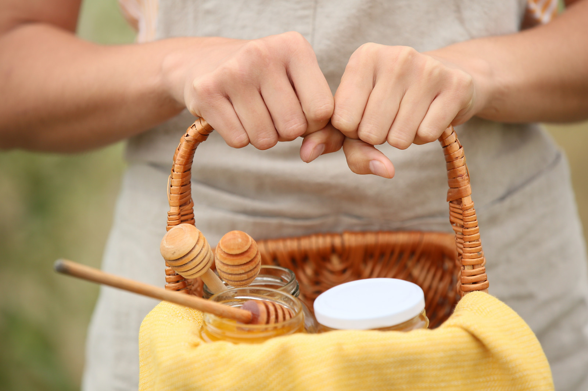

Как я начинал заниматься пчеловодством
Привет всем!!!!
Меня зовут Андрей,я пчеловод из Николаева.Пчеловодством занимаюсь с 2017 года.Начиналось все с 2-ух ульев, это были старенькие лежаки.Купил их у дедушки за городом, который пасеку продавал.С этого и начались мои приключения. Самое интересное в этом всем,что в моей семье пчелами занимался только мой прадедушка которого я даже не помню.Знаний как таковых у меня не было.Черпал все знания,в этой сфере, от знакомых и сотрудников по работе.Каждый год я старался приобрести пчел.И практически каждый год у меня было плюс две пчелосемьи.Но так как опыта,как я говорил ранее, у меня не было моя пасека уменьшалась в самый сложный период для пчеловода.Это осень-зима.Сейчас моя пасека состоит из десятка пчелосемей.
Собрал для вас информацию про продукты пчеловодства
Польза пчелиной продукции
Самый главный,и известный для всех,пчелиный продукт это Мед
Также существует еще очень много продуктов пчеловодства,полезных для здоровья.Такие, как: